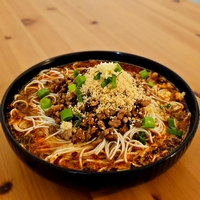

Les xiao mian ou « petites nouilles » sont largement consommées comme street food à Chongqing et plus généralement au Sichuan. Il s'agit d'un plat simple, comme son nom le suggère: nouilles avec quelques légumes dans un bouillon épicé saupoudrées de quelques cacahuètes concassées. Considéré comme un aliment de base de la ville, il fait partie intégrante de son patrimoine culinaire.
Typiquement épicées, ces nouilles peuvent être customisées à volonté. Parmi les ingrédients les plus fréquemment utilisés, on retrouve : du bœuf braisé, des pois cassés, du porc haché, des épinards et du chou chinois.
cuillères à soupe d'
grammes de
grammes de
cuillère à soupe de
cuillère à café de
cuillère à café de
cuillère à café de
pincée de
grammes de
grammes de
grammes d'
grammes de
cuillère à café de
pincée de
grammes de
cuillères à soupe de
cuillère à café de
grammes de
grammes de
gousses d'
La recette traditionnelle de Chongqing utilise généralement des nouilles fraîches alcalines.
Trouver cet exact type de nouilles peut être un véritable challenge, mais vous pouvez absolument opter pour des nouilles de type ramen. Les nouilles fraiches sont préférables si vous arrivez à vous en procurer: utilisez alors 300g au lieu de 200g.
J'utilise habituellement une huile pimentée faite maison mais si vous n'en avez pas je recommande d'utiliser l'huile pimentée Crispy chili in oil de la marque Lao Gan Ma.
La quantité d'huile pimentée est modulable en fonction de vos préférences.
La sauce tianmianjiang est une sauce épaisse de couleur sombre utilisée dans la préparation de plusieurs plats chinois dont le canard laqué et les zhajiangmian.
Vous pourrez probablement la trouver dans les épiceries asiatiques. Sinon, la sauce Hoisin fait un excellent substitut.
La recette traditionnelle utilise des yacai du Sichuan: des tiges et feuilles de moutarde hachées, salées et fermentées qui ont un goût très prononcé umami et salé.
À défaut, vous pouvez opter pour les zhacai du Sichuan, des bulbes de moutarde fermentés au sel et au piment, ou encore les dongcai de Tianjin, du chou finement haché, salé et fermenté.
... ou simplement vous en passer !
(Optionnel) Faites griller les cacahuètes (10g) 3 minutes à feu moyen et concassez-les.
(Optionnel) Faites griller les poivres du Sichuan (4g) 1 minute 30 à feu moyen-doux puis réduisez-les en poudre.
(Optionnel) Faites chauffer légèrement les légumes fermentés (2 cuillères à soupe) avec la chaleur résiduelle de la poêle.
Hachez finement le gingembre (3g).
Dans un wok, faites chauffer l'huile (3 cuillères à soupe) à feu moyen-fort et faites-la tourner pour bien napper le wok et obtenir une surface antiadhésive.
Faites revenir brièvement le gingembre jusqu'à ce qu'il libère son arôme.
Ajoutez le haché de porc (100g) et faites sauter pendant environ 1 minute en veillant à l'émietter avec une spatule.
Versez le vin de Shaoxing (½ cuillère à soupe) sur les bords du wok et mélangez.
Quand la viande est à sec, poussez-la sur un bord et penchez le wok afin que l'huile s'accumule sur le côté opposé et faites-y revenir quelques secondes la sauce tianmianjiang (1 cuillère à café).
Une fois que la sauce libère son parfum, mélangez avec la viande et ajoutez-y la sauce soja (1 cuillère à café) et la sauce soja foncée (¼ cuillère à café).
Salez à votre convenance.
Faites cuire les nouilles (200g) selon votre préférence.
Diluez la pâte de sésame (10g) avec un peu d'huile (du même pot) afin de la liquéfier un peu.
(Optionnel) Écrasez l'ail (2 gousses).
(Optionnel) Hachez le vert de la cébette.
Répartissez dans deux bols: La pâte de sésame (10g) Le bouillon chaud (100g) La sauce soja (20g) L'huile pimentée (40g) Le sucre blanc (1 cuillère à café) (Optionnel) le vinaigre noir (½ cuillère à café) Les nouilles La garniture (Optionnel) les légumes fermentés (2 cuillères à soupe) (Optionnel) les cacahuètes concassées (Optionnel) le poivre du Sichuan réduit en poudre (Optionnel) l'ail écrasé (Optionnel) le vert de cébette Et une pincée de sel.
Servez, mélangez et dégustez !
